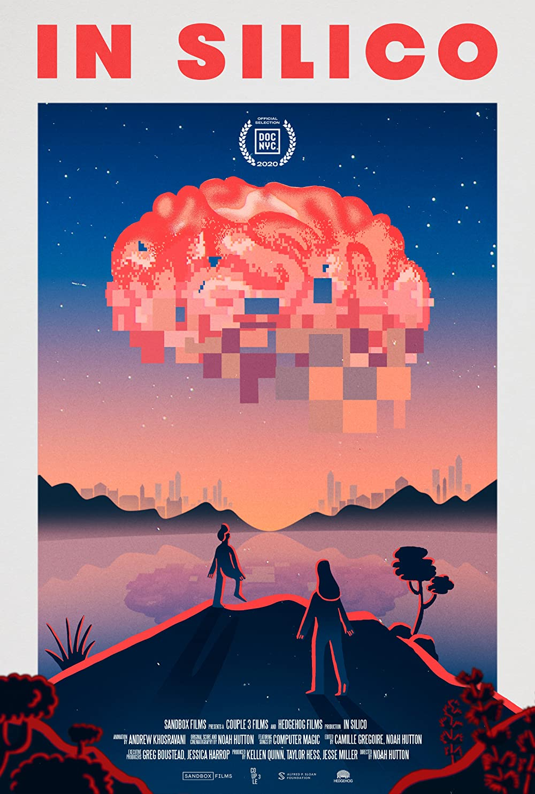

ภาควิชาประสาทวิทยา จุฬาลงกรณ์มหาวิทยาลัย ร่วมกับภาควิชาวิศวกรรมชีวการแพทย์ มหาวิทยาลัยมหิดล ร่วมจัดกิจกรรมและนิทรรศการวันเด็กย้อนหลังและฉายสารคดีเรื่อง In Silico ร่วมกับวงสนทนาเกี่ยวกับงานวิจัยสมองในประเทศไทย ในวันที่ 15 มกราคม พ.ศ. 2565 ตั้งแต่เวลา 9:00 น. ถึง 17:00 น. ณ โรงพยาบาลจุฬาลงกรณ์มหาวิทยาลัย (นิทรรศการวันเด็กช่วงเช้า) และ Documentary Club สีลม (รับชมสารคดี In Silico ช่วงบ่าย, จำนวนจำกัด, สมัครเพื่อเข้าชม)
นิทรรศการช่วงเช้าเปิดให้ทุกเพศวัยเข้างาน สำหรับผู้ที่สนใจเข้าร่วมสารคดีในช่วงบ่ายสามารถลงทะเบียนได้ในหน้าลงทะเบียนด้านบน เนื่องจากข้อจำกัดของสถานที่ทีมงานจะคัดเลือกผู้เข้างานเพียง 30 คนเท่านั้น และแจ้งภายในวันที่ 11 มกราคม พ.ศ. 2565
In Silico เป็นสารคดีที่ติดตามโครงการ Human Brain Project โครงการศึกษาสมองที่ใหญ่ที่สุดโครงการหนึ่งที่เคยมีมาในประวัติศาสตร์ ที่นำทีมนักประสาทวิทยาที่เป็นที่รู้จักในวงการเฮนรี่ มาครัม (Henry Markram) ศาสตราจารย์มาครัมนำเสนอสิ่งที่นักประสาทวิทยาคิดว่าเป็นไปไม่ได้ในยุคนั้น ซึ่งก็คือการนำสมองเข้ามาฝังเข้าไปใน Supercomputer (ลองดู TED talk ของเค้าได้ด้านล่าง) มาร่วมเข้าใจความสำคัญของการศึกษาสมอง ความล้มเหลว และสิ่งที่ได้จากโปรเจกต์นี้พร้อมกัน ในสารคดี In Silico ด้วยกันในวันงาน